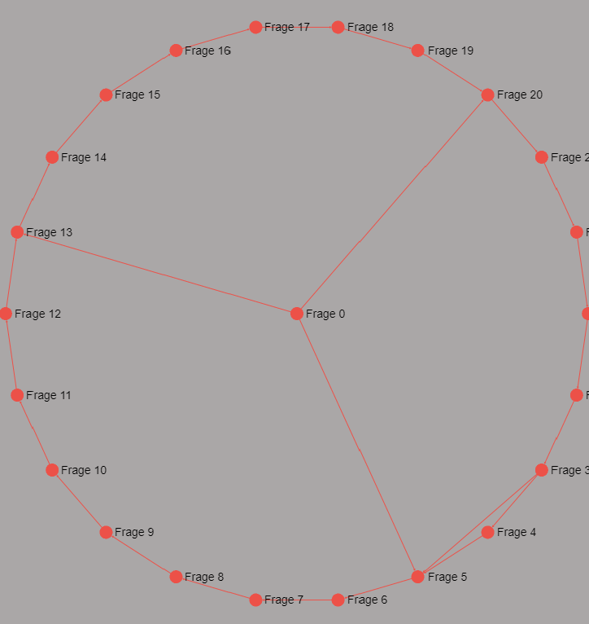

digLL Konfigurator
Herzlich willkommen beim digLL Konfigurator.
Mit Hilfe dieses Konfigurators ist es möglich einen Fragebogen für die interaktive Hilfe für wissenschaftliches Arbeiten zu Konfigurieren.
Mit der interaktiven Hilfe für wissenschaftliches Arbeiten sollen erste Informationen über Kenntnisse und Interessen der Studenten gewonnen werden, die ein Interesse haben bei einem selbst ihre Abschlussarbeit zu schreiben.
Zum Erstellen eines Fragebogens kann dieser Konfigurator genutzt werden. Dazu kann entweder eine bestehende Vorlage (JSON) bearbeitet werden oder es kann ein komplett neuer Fragebogen erstellt werden.
Was möchten Sie tun?
An dieser Stelle wird Ihr Fragebogen als Graph sichtbar sein.
